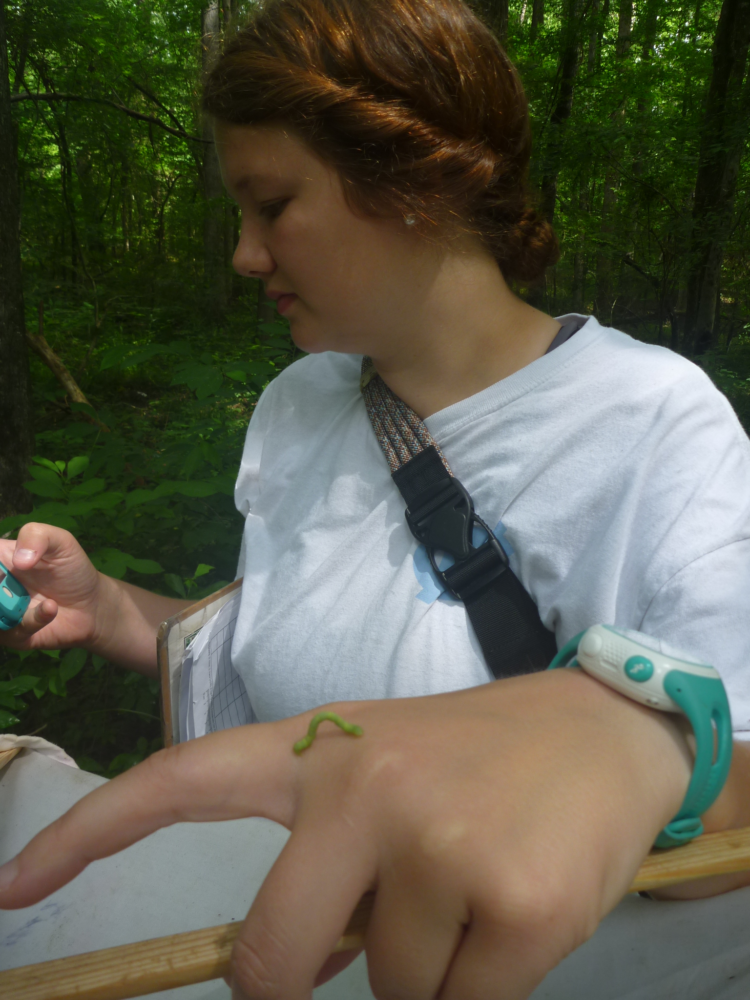

Getting Involved
We are very excited to incorporate new Caterpillars Count! sites into our network, especially sites that have the potential to be monitored repeatedly over time (even if the monitoring is being done by a different set of people each time!). If you are an educator or are based at an environmental education center, nature center, or research field station, or if you are a dedicated monitor of the natural history of your own backyard, then have a look at the materials in the sidebar and please contact us for more information about how to get involved.
If you would like to help conduct caterpillar surveys, then check our homepage to see a list of currently participating sites. If there is not a participating site near you, feel free to mention us to your local nature center and encourage them to contact us!
Surveys
Caterpillars can be difficult to monitor because they can be “patchy” in their distribution. You might look at a hundred leaves on a plant and not see a single one, and then on the next leaf examined you might find a motherload of caterpillars, and beetles and aphids. This means that to compare insect abundance from one place to another, we need to make sure we use the same survey protocol and keep track of our level of effort.
Our basic survey unit is the 50-leaf foliage survey. At a single bush or tree, you will carefully inspect 50 leaves—both the upper and underside surfaces—and their associated twigs and record the type and size of the insects you observe. If you have a smartphone, you can even snap a photo and include that with the data you record!
Detailed instructions for conducting leaf surveys are provided here.
Tips for identifying insects and arthropods to Order can be found here.
Also see other useful resources from Discover Life and the American Museum of Natural History, as well as some of the apps and resources listed in the righthand bar.
Mobile Apps
We have a Caterpillars Count! mobile apps for Android and iOS that makes it easy to submit your data and photos directly to our website. You'll then be able to visualize those data within seconds!
These mobile apps are still in beta-testing, so we welcome feedback and suggestions.
Note:
- You will need to create a free Caterpillars Count! account before you can use the app.
- Data can only be submitted for participating Caterpillar Count! sites. You will be given the Site ID number and site password by your Site Coordinator. If you are interested in starting a new Caterpillars Count! site, then please refer to the Frequently Asked Questions page!
- Refer to the manual for more details about how to submit data using either the app or website.